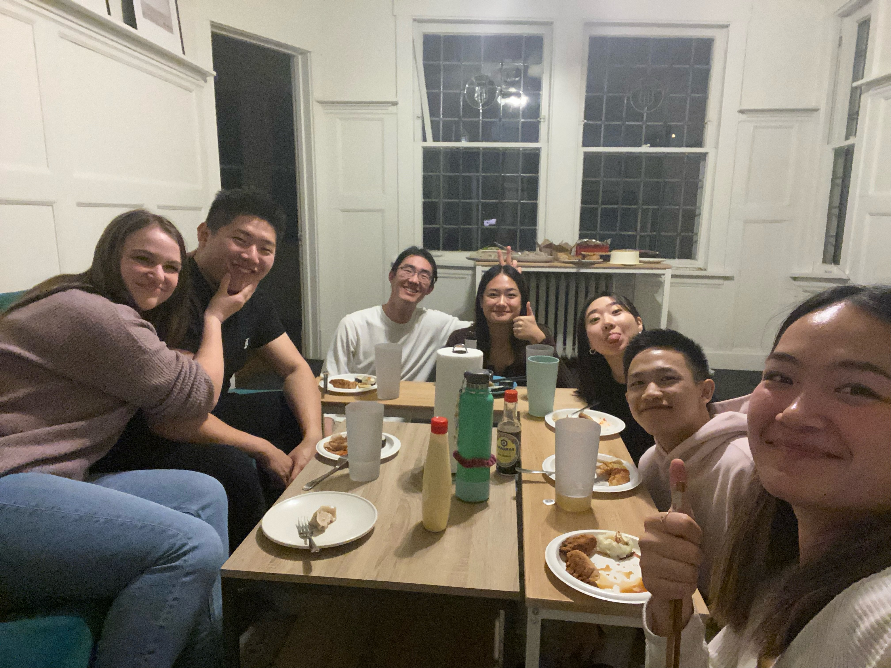
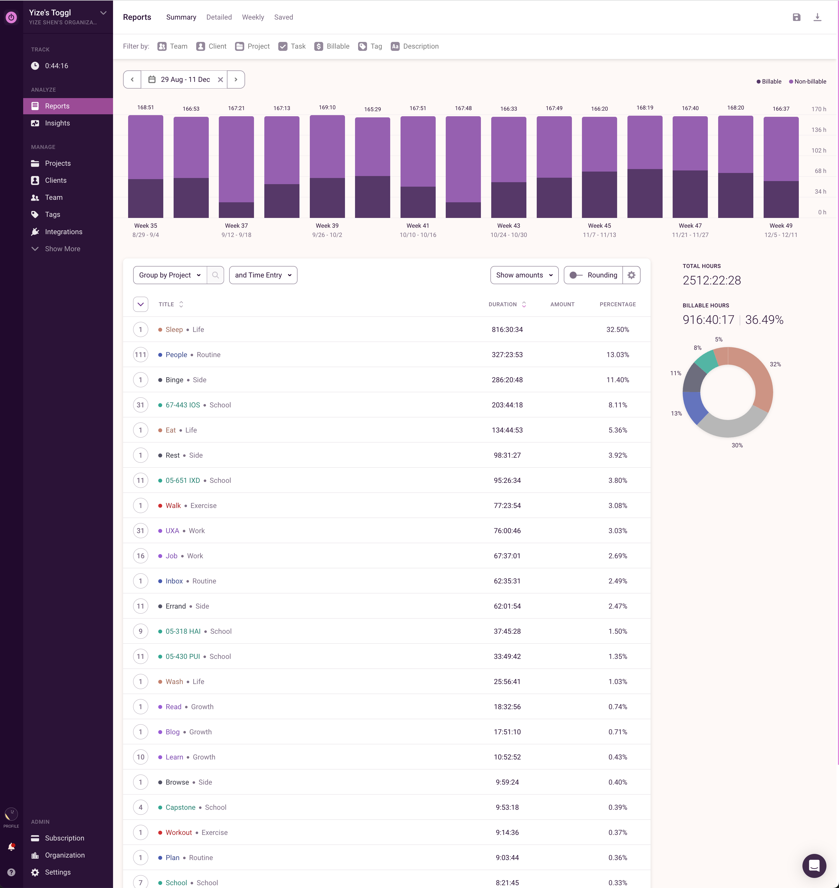
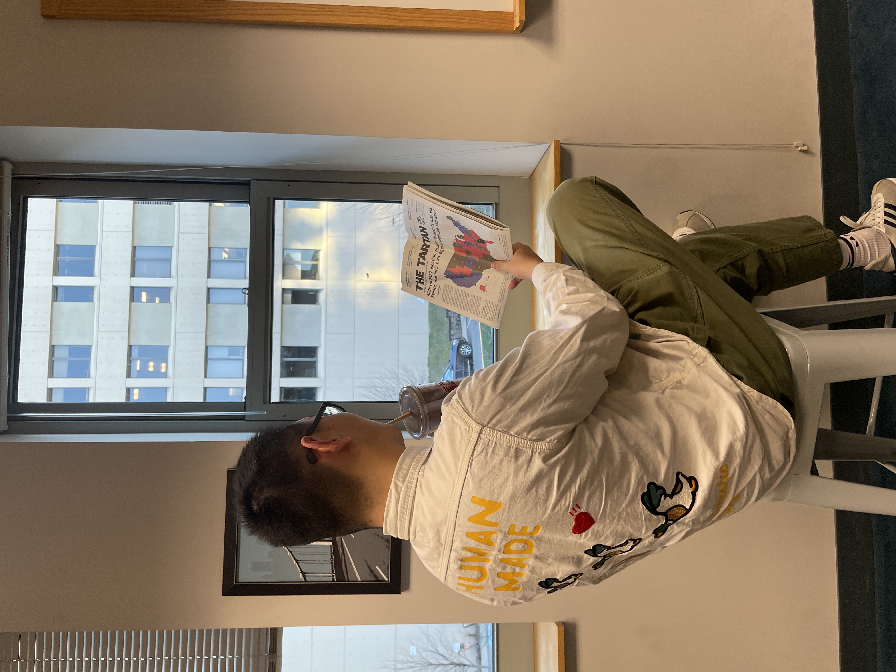

Ongoing Journey - November 2022
Thanksgiving, socializing, connections
dumpling pics, side note ma sister's are so good at cooking now :')Made dumplings at Ma sister’s house this Thanksgiving, and a day after hosted a hotpot night with UXA. Nancy mentioned CMU is a special place to be in, started to resonate with the thought more and more.
I was surrounded by care and affection from the people I knew before realizing it it felt like. On Toggl it says I spent 327 hours socializing in the past 3 months, more than all of my classes this semester combined lol.
my semester at a galnce, thanks Helen for the intro to togglNicole, quarrel, responsibilities
 'chilll it will be fineeee' was the first sentence bill said when I reached out about this lol
'chilll it will be fineeee' was the first sentence bill said when I reached out about this lol
The biggest contributor to discontent in otherwise healthy relationships is an accumulation of unspoken and unclarified expectations.
What 陆屿 said after and, think was exactly what I got to learn.
Had a quarrel with nicole earlier this month, remember having this feeling of, unfair, getting only a few replies with the messages sent.
Chatted with Ping-Ya, Bill and Louie all talked about expectation and responsibilities. I only get to control how much I reachout, and have set way too high of an expectation of the responsiveness on my counterparts.
Jokingly calls Nicole 小公主 sometimes and found it ironic that, she really is one of the most emotionally intelligent person I got to meet. Situation is somewhat resolved and, there are much more I get to learn on communicating with others.
Dad, trip planning, 悟道
Borrowed some money from parents for a two-week trip to Seattle. After hearing my detailed proposal on how I would spend each dime my dad went
你借钱出去玩是为了把借来的钱给花掉吗 :D?
His way of saying ‘what do you want to get out of this trip’ lol, realizing that I was planning the trip solely based on how much money was given.
As a Buddhist dad often talks about 修佛 and 悟道, in the context of trip planning, making research/spending money and knowing what you want to get out of the trip.
I want myself and the people on the trip to bond closer together in that week + enjoy a new environment in a relaxing way, started a spreadsheet and asked for people’s opinions :)
 spreadsheet for the events :D
spreadsheet for the events :D
Capstone TA, non-zero sum game
placeholderBill referred me and another junior as HCI capstone TA candidates for S23, I got offered the position after the interview.
After a chat with the professor learned there is only one TA spot for the course, and other candidates will be only considered if I reject mine. Knowing that there was another person Bill recommended thought ‘anyway I can do better’.
So yeah, two email threads, a bunch of nodding and a few ‘how may we do this’ after, the SCS department agreed to hire another TA for the course, both of us got to be TAs :D.
Steve said I finally got to be a puppet master though felt the opposite, this time I understood the rule of the game, chose to alter it, and left my counterpart room to make their choices, instead of a puppet master, felt I was simply steps closer to the person I want to be, someone that’s both emotional and logical, someone that always think how to make the cake bigger.